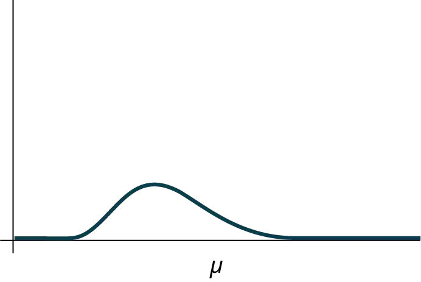
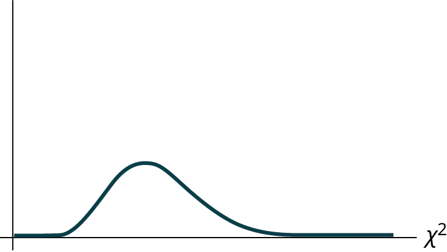
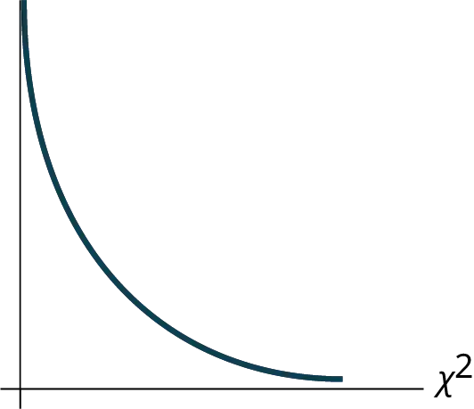

Chapter 11: The Chi-Square Distribution¶
Introduction¶
Chapter Outline: Chapter Objectives
By the end of this chapter, the student should be able to:
- Interpret the chi-square probability distribution as the sample size changes.
- Conduct and interpret chi-square goodness-of-fit hypothesis tests.
- Conduct and interpret chi-square test of independence hypothesis tests.
- Conduct and interpret chi-square homogeneity hypothesis tests.
- Conduct and interpret chi-square single variance hypothesis tests.
Have you ever wondered if lottery numbers were evenly distributed or if some numbers occurred with a greater frequency? How about if the types of movies people preferred were different across different age groups? What about if a coffee machine was dispensing approximately the same amount of coffee each time? You could answer these questions by conducting a hypothesis test.
You will now study a new distribution, one that is used to determine the answers to such questions. This distribution is called the chi-square distribution.
In this chapter, you will learn the three major applications of the chi-square distribution:
- the goodness-of-fit test, which determines if data fit a particular distribution, such as in the lottery example
- the test of independence, which determines if events are independent, such as in the movie example
- the test of a single variance, which tests variability, such as in the coffee example
NOTE
Though the chi-square distribution depends on calculators or computers for most of the calculations, there is a table available (see Appendix G NOTEs for the TI-83, 83+, 84, 84+ Calculators). TI-83+ and TI-84 calculator instructions are included in the text.
Collaborative Exercise: Collaborative Classroom Exercise
Look in the sports section of a newspaper or on the Internet for some sports data (baseball averages, basketball scores, golf tournament scores, football odds, swimming times, and the like). Plot a histogram and a boxplot using your data. See if you can determine a probability distribution that your data fits. Have a discussion with the class about your choice.
11.1 Facts About the Chi-Square Distribution¶
The notation for the chi-square distribution is:
where df = degrees of freedom which depends on how chi-square is being used. (If you want to practice calculating chi-square probabilities then use df = n - 1. The degrees of freedom for the three major uses are each calculated differently.)
For the χ2 distribution, the population mean is μ = df and the population standard deviation is \(\sigma=\sqrt{2(df)}\).
The random variable is shown as χ2, but may be any upper case letter.
The random variable for a chi-square distribution with k degrees of freedom is the sum of k independent, squared standard normal variables.
χ2 = (Z1)2 + (Z2)2 + ... + (Zk)2
1. The curve is nonsymmetrical and skewed to the right.
2. There is a different chi-square curve for each df.
3. The test statistic for any test is always greater than or equal to zero.
4. When df > 90, the chi-square curve approximates the normal distribution. For X ~ \(\chi_{1,000}^{2}\) the mean, μ = df = 1,000 and the standard deviation, σ = \(\sqrt{2(1,000)}\) = 44.7. Therefore, X ~ N(1,000, 44.7), approximately.
5. The mean, μ, is located just to the right of the peak.

11.2 Goodness-of-Fit Test¶
In this type of hypothesis test, you determine whether the data "fit" a particular distribution or not. For example, you may suspect your unknown data fit a binomial distribution. You use a chi-square test (meaning the distribution for the hypothesis test is chi-square) to determine if there is a fit or not. The null and the alternative hypotheses for this test may be written in sentences or may be stated as equations or inequalities.
The test statistic for a goodness-of-fit test is:
where:
- O = observed values (data)
- E = expected values (from theory)
- k = the number of different data cells or categories
The observed values are the data values and the expected values are the values you would expect to get if the null hypothesis were true. There are n terms of the form \(\frac{{(O-E)}^{2}}{E}\).
The number of degrees of freedom is df = (number of categories – 1).
The goodness-of-fit test is almost always right-tailed. If the observed values and the corresponding expected values are not close to each other, then the test statistic can get very large and will be way out in the right tail of the chi-square curve.
NOTE
The expected value for each cell needs to be at least five in order for you to use this test.
Example 11.1
Absenteeism of college students from math classes is a major concern to math instructors because missing class appears to increase the drop rate. Suppose that a study was done to determine if the actual student absenteeism rate follows faculty perception. The faculty expected that a group of 100 students would miss class according to Table 11.1.
Table 11.1
| Number of absences per term | Expected number of students |
|---|---|
| 0–2 | 50 |
| 3–5 | 30 |
| 6–8 | 12 |
| 9–11 | 6 |
| 12+ | 2 |
A random survey across all mathematics courses was then done to determine the actual number (observed) of absences in a course. The chart in Table 11.2 displays the results of that survey.
Table 11.2
| Number of absences per term | Actual number of students |
|---|---|
| 0–2 | 35 |
| 3–5 | 40 |
| 6–8 | 20 |
| 9–11 | 1 |
| 12+ | 4 |
Determine the null and alternative hypotheses needed to conduct a goodness-of-fit test.
H0: Student absenteeism fits faculty perception.
The alternative hypothesis is the opposite of the null hypothesis.
Ha: Student absenteeism does not fit faculty perception.
a. Can you use the information as it appears in the charts to conduct the goodness-of-fit test?
Solution
a. No. Notice that the expected number of absences for the "12+" entry is less than five (it is two). Combine that group with the "9–11" group to create new tables where the number of students for each entry are at least five. The new results are in Table 11.3 and Table 11.4.
Table 11.3
| Number of absences per term | Expected number of students |
|---|---|
| 0–2 | 50 |
| 3–5 | 30 |
| 6–8 | 12 |
| 9+ | 8 |
Table 11.4
| Number of absences per term | Actual number of students |
|---|---|
| 0–2 | 35 |
| 3–5 | 40 |
| 6–8 | 20 |
| 9+ | 5 |
b. What is the number of degrees of freedom (df)?
Solution
b. There are four "cells" or categories in each of the new tables.
df = number of cells – 1 = 4 – 1 = 3
Try It
A factory manager needs to understand how many products are defective versus how many are produced. The number of expected defects is listed in Table 11.5.
Table 11.5
| Number produced | Number defective |
|---|---|
| 0–100 | 5 |
| 101–200 | 6 |
| 201–300 | 7 |
| 301–400 | 8 |
| 401–500 | 10 |
A random sample was taken to determine the actual number of defects. Table 11.6 shows the results of the survey.
Table 11.6
| Number produced | Number defective |
|---|---|
| 0–100 | 5 |
| 101–200 | 7 |
| 201–300 | 8 |
| 301–400 | 9 |
| 401–500 | 11 |
State the null and alternative hypotheses needed to conduct a goodness-of-fit test, and state the degrees of freedom.
Example 11.2
Employers want to know which days of the week employees are absent in a five-day work week. Most employers would like to believe that employees are absent equally during the week. Suppose a random sample of 60 managers were asked on which day of the week they had the highest number of employee absences. The results were distributed as in Table 11.7. For the population of employees, do the days for the highest number of absences occur with equal frequencies during a five-day work week? Test at a 5% significance level.
Table 11.7 Day of the Week Employees were Most Absent
| Monday | Tuesday | Wednesday | Thursday | Friday | |
|---|---|---|---|---|---|
| Number of Absences | 15 | 12 | 9 | 9 | 15 |
Solution
The null and alternative hypotheses are:
- H0: The absent days occur with equal frequencies, that is, they fit a uniform distribution.
- Ha: The absent days occur with unequal frequencies, that is, they do not fit a uniform distribution.
If the absent days occur with equal frequencies, then, out of 60 absent days (the total in the sample: 15 + 12 + 9 + 9 + 15 = 60), there would be 12 absences on Monday, 12 on Tuesday, 12 on Wednesday, 12 on Thursday, and 12 on Friday. These numbers are the expected (E) values. The values in the table are the observed (O) values or data.
This time, calculate the χ2 test statistic by hand. Make a chart with the following headings and fill in the columns:
- Expected (E) values (12, 12, 12, 12, 12)
- Observed (O) values (15, 12, 9, 9, 15)
- (O – E)
- (O – E)2
- \(\frac{{(O-E)}^{2}}{E}\)
Now add (sum) the last column. The sum is three. This is the χ2 test statistic.
To find the p-value, calculate P(χ2 > 3). This test is right-tailed. (Use a computer or calculator to find the p-value. You should get p-value = 0.5578.)
The dfs are the number of cells – 1 = 5 – 1 = 4
Using the Calculator
Press 2nd DISTR. Arrow down to χ2cdf. Press ENTER. Enter (3,10^99,4). Rounded to four decimal places, you should see 0.5578, which is the p-value.
Next, complete a graph like the following one with the proper labeling and shading. (You should shade the right tail.)

The decision is not to reject the null hypothesis.
Conclusion: At a 5% level of significance, from the sample data, there is not sufficient evidence to conclude that the absent days do not occur with equal frequencies.
Using the Calculator
TI-83+ and some TI-84 calculators do not have a special program for the test statistic for the goodness-of-fit test. The next example Example 11.3 has the calculator instructions. The newer TI-84 calculators have in STAT TESTS the test Chi2 GOF. To run the test, put the observed values (the data) into a first list and the expected values (the values you expect if the null hypothesis is true) into a second list. Press STAT TESTS and Chi2 GOF. Enter the list names for the Observed list and the Expected list. Enter the degrees of freedom and press calculate or draw. Make sure you clear any lists before you start. To Clear Lists in the calculators: Go into STAT EDIT and arrow up to the list name area of the particular list. Press CLEAR and then arrow down. The list will be cleared. Alternatively, you can press STAT and press 4 (for ClrList). Enter the list name and press ENTER.
Try It
Teachers want to know which night each week their students are doing most of their homework. Most teachers think that students do homework equally throughout the week. Suppose a random sample of 56 students were asked on which night of the week they did the most homework. The results were distributed as in Table 11.8.
Table 11.8
| Sunday | Monday | Tuesday | Wednesday | Thursday | Friday | Saturday | |
|---|---|---|---|---|---|---|---|
| Number of Students | 11 | 8 | 10 | 7 | 10 | 5 | 5 |
From the population of students, do the nights for the highest number of students doing the majority of their homework occur with equal frequencies during a week? What type of hypothesis test should you use?
Example 11.3
One study indicates that the number of streaming services that American families have is distributed (this is the given distribution for the American population) as in Table 11.9.
Table 11.9
| Number of Streaming Services | Percent |
|---|---|
| 0 | 10 |
| 1 | 16 |
| 2 | 55 |
| 3 | 11 |
| 4+ | 8 |
The table contains expected (E) percents.
A random sample of 600 families in the far western United States resulted in the data in Table 11.10.
Table 11.10
| Number of Streaming Services | Frequency |
|---|---|
| 0 | 66 |
| 1 | 119 |
| 2 | 340 |
| 3 | 60 |
| 4+ | 15 |
| Total = 600 |
The table contains observed (O) frequency values.
At the 1% significance level, does it appear that the distribution "number of streaming services" of far western United States families is different from the distribution for the American population as a whole?
Solution
This problem asks you to test whether the far western United States families distribution fits the distribution of the American families. This test is always right-tailed.
The first table contains expected percentages. To get expected (E) frequencies, multiply the percentage by 600. The expected frequencies are shown in Table 11.11.
Table 11.11
| Number of Streaming Services | Percent | Expected Frequency |
|---|---|---|
| 0 | 10 | (0.10)(600) = 60 |
| 1 | 16 | (0.16)(600) = 96 |
| 2 | 55 | (0.55)(600) = 330 |
| 3 | 11 | (0.11)(600) = 66 |
| over 3 | 8 | (0.08)(600) = 48 |
Therefore, the expected frequencies are 60, 96, 330, 66, and 48. In the TI calculators, you can let the calculator do the math. For example, instead of 60, enter 0.10*600.
H0: The "number of streaming services" distribution of far western United States families is the same as the "number of streaming services" distribution of the American population.
Ha: The "number of streaming services" distribution of far western United States families is different from the "number of streaming services" distribution of the American population.
Distribution for the test: \(\chi_{4}^{2}\) where df = (the number of cells) – 1 = 5 – 1 = 4.
NOTE
df ≠ 600 – 1
Calculate the test statistic: χ2 = 29.65
Graph:
Probability statement: p-value = P(χ2 > 29.65) = 0.000006
Compare α and the p-value:
- α = 0.01
- p-value = 0.000006
So, α > p-value.
Make a decision: Since α > p-value, reject Ho.
This means you reject the belief that the distribution for the far western states is the same as that of the American population as a whole.
Conclusion: At the 1% significance level, from the data, there is sufficient evidence to conclude that the "number of streaming services" distribution for the far western United States is different from the "number of streaming services" distribution for the American population as a whole.
Using the Calculator
Press STAT and ENTER. Make sure to clear lists L1, L2, and L3 if they have data in them (see the note at the end of Example 11.2). Into L1, put the observed frequencies 66, 119, 340, 60, 15. Into L2, put the expected frequencies .10*600, .16*600, .55*600, .11*600, .08*600. Arrow over to list L3 and up to the name area "L3". Enter (L1-L2)^2/L2 and ENTER. Press 2nd QUIT. Press 2nd LIST and arrow over to MATH. Press 5. You should see "sum" (Enter L3). Rounded to 2 decimal places, you should see 29.65. Press 2nd DISTR. Press 7 or Arrow down to 7:χ2cdf and press ENTER. Enter (29.65,1E99,4). Rounded to four places, you should see 5.77E-6 = .000006 (rounded to six decimal places), which is the p-value.
The newer TI-84 calculators have in STAT TESTS the test Chi2 GOF. To run the test, put the observed values (the data) into a first list and the expected values (the values you expect if the null hypothesis is true) into a second list. Press STAT TESTS and Chi2 GOF. Enter the list names for the Observed list and the Expected list. Enter the degrees of freedom and press calculate or draw. Make sure you clear any lists before you start.
Try It
The expected percentage of the number of pets students have in their homes is distributed (this is the given distribution for the student population of the United States) as in Table 11.12.
Table 11.12
| Number of Pets | Percent |
|---|---|
| 0 | 18 |
| 1 | 25 |
| 2 | 30 |
| 3 | 18 |
| 4+ | 9 |
A random sample of 1,000 students from the Eastern United States resulted in the data in Table 11.13.
Table 11.13
| Number of Pets | Frequency |
|---|---|
| 0 | 210 |
| 1 | 240 |
| 2 | 320 |
| 3 | 140 |
| 4+ | 90 |
At the 1% significance level, does it appear that the distribution “number of pets” of students in the Eastern United States is different from the distribution for the United States student population as a whole? What is the p-value?
Example 11.4
Suppose you flip two coins 100 times. The results are 20 HH, 27 HT, 30 TH, and 23 TT. Are the coins fair? Test at a 5% significance level.
Solution
This problem can be set up as a goodness-of-fit problem. The sample space for flipping two fair coins is {HH, HT, TH, TT}. Out of 100 flips, you would expect 25 HH, 25 HT, 25 TH, and 25 TT. This is the expected distribution. The question, "Are the coins fair?" is the same as saying, "Does the distribution of the coins (20 HH, 27 HT, 30 TH, 23 TT) fit the expected distribution?"
Random Variable: Let X = the number of heads in one flip of the two coins. X takes on the values 0, 1, 2. (There are 0, 1, or 2 heads in the flip of two coins.) Therefore, the number of cells is three. Since X = the number of heads, the observed frequencies are 20 (for two heads), 57 (for one head), and 23 (for zero heads or both tails). The expected frequencies are 25 (for two heads), 50 (for one head), and 25 (for zero heads or both tails). This test is right-tailed.
H0: The coins are fair.
Ha: The coins are not fair.
Distribution for the test: \(\chi_{2}^{2}\) where df = 3 – 1 = 2.
Calculate the test statistic: χ2 = 2.14
Graph:
Probability statement: p-value = P(χ2 > 2.14) = 0.3430
Compare α and the p-value:
- α = 0.05
- p-value = 0.3430
α < p-value.
Make a decision: Since α < p-value, do not reject H0.
Conclusion: There is insufficient evidence to conclude that the coins are not fair.
Using the Calculator
Press STAT and ENTER. Make sure you clear lists L1, L2, and L3 if they have data in them. Into L1, put the observed frequencies 20, 57, 23. Into L2, put the expected frequencies 25, 50, 25. Arrow over to list L3 and up to the name area "L3". Enter (L1-L2)^2/L2 and ENTER. Press 2nd QUIT. Press 2nd LIST and arrow over to MATH. Press 5. You should see "sum".Enter L3. Rounded to two decimal places, you should see 2.14. Press 2nd DISTR. Arrow down to 7:χ2cdf (or press 7). Press ENTER. Enter 2.14,1E99,2). Rounded to four places, you should see .3430, which is the p-value.
The newer TI-84 calculators have in STAT TESTS the test Chi2 GOF. To run the test, put the observed values (the data) into a first list and the expected values (the values you expect if the null hypothesis is true) into a second list. Press STAT TESTS and Chi2 GOF. Enter the list names for the Observed list and the Expected list. Enter the degrees of freedom and press calculate or draw. Make sure you clear any lists before you start.
Try It
Students in a social studies class hypothesize that the literacy rates across the world for every region are 82%. Table 11.14 shows the actual literacy rates across the world broken down by region. What are the test statistic and the degrees of freedom?
Table 11.14
| MDG Region | Adult Literacy Rate (%) |
|---|---|
| Developed Regions | 99.0 |
| Commonwealth of Independent States | 99.5 |
| Northern Africa | 67.3 |
| Sub-Saharan Africa | 62.5 |
| Latin America and the Caribbean | 91.0 |
| Eastern Asia | 93.8 |
| Southern Asia | 61.9 |
| South-Eastern Asia | 91.9 |
| Western Asia | 84.5 |
| Oceania | 66.4 |
11.3 Test of Independence¶
Tests of independence involve using a contingency table of observed (data) values.
The test statistic for a test of independence is similar to that of a goodness-of-fit test:
where:
- O = observed values
- E = expected values
- i = the number of rows in the table
- j = the number of columns in the table
There are \(i\cdot j\) terms of the form \(\frac{{(O-E)}^{2}}{E}\).
A test of independence determines whether two factors are independent or not. You first encountered the term independence in Probability Topics. As a review, consider the following example.
NOTE
The expected value for each cell needs to be at least five in order for you to use this test.
Example 11.5
Suppose A = a speeding violation in the last year and B = a cell phone user while driving. If A and B are independent then P(A AND B) = P(A)P(B). A AND B is the event that a driver received a speeding violation last year and also used a cell phone while driving. Suppose, in a study of drivers who received speeding violations in the last year, and who used cell phone while driving, that 755 people were surveyed. Out of the 755, 70 had a speeding violation and 685 did not; 305 used cell phones while driving and 450 did not.
Let y = expected number of drivers who used a cell phone while driving and received speeding violations.
If A and B are independent, then P(A AND B) = P(A)P(B). By substitution,
\(\frac{y}{755}=\left( \frac{70}{755} \right)\left( \frac{305}{755} \right)\)
Solve for y: y = \(\frac{(70)(305)}{755}=28.3\)
About 28 people from the sample are expected to use cell phones while driving and to receive speeding violations.
In a test of independence, we state the null and alternative hypotheses in words. Since the contingency table consists of two factors, the null hypothesis states that the factors are independent and the alternative hypothesis states that they are not independent (dependent). If we do a test of independence using the example, then the null hypothesis is:
H0: Being a cell phone user while driving and receiving a speeding violation are independent events.
If the null hypothesis were true, we would expect about 28 people to use cell phones while driving and to receive a speeding violation.
The test of independence is always right-tailed because of the calculation of the test statistic. If the expected and observed values are not close together, then the test statistic is very large and way out in the right tail of the chi-square curve, as it is in a goodness-of-fit.
The number of degrees of freedom for the test of independence is:
df = (number of columns - 1)(number of rows - 1)
The following formula calculates the expected number (E):
Try It
A sample of 300 students is taken. Of the students surveyed, 50 were music students, while 250 were not. Ninety-seven were on the honor roll, while 203 were not. If we assume being a music student and being on the honor roll are independent events, what is the expected number of music students who are also on the honor roll?
Example 11.6
In a volunteer group, adults 21 and older volunteer from one to nine hours each week to spend time with a disabled senior citizen. The program recruits among community college students, four-year college students, and nonstudents. In Table 11.15 is a sample of the adult volunteers and the number of hours they volunteer per week.
Table 11.15 Number of Hours Worked Per Week by Volunteer Type (Observed) The table contains observed (O) values (data).
| Type of Volunteer | 1–3 Hours | 4–6 Hours | 7–9 Hours | Row Total |
|---|---|---|---|---|
| Community College Students | 111 | 96 | 48 | 255 |
| Four-Year College Students | 96 | 133 | 61 | 290 |
| Nonstudents | 91 | 150 | 53 | 294 |
| Column Total | 298 | 379 | 162 | 839 |
Is the number of hours volunteered independent of the type of volunteer?
Solution
The observed table and the question at the end of the problem, "Is the number of hours volunteered independent of the type of volunteer?" tell you this is a test of independence. The two factors are number of hours volunteered and type of volunteer. This test is always right-tailed.
H0: The number of hours volunteered is independent of the type of volunteer.
Ha: The number of hours volunteered is dependent on the type of volunteer.
The expected results are in Table 11.16.
Table 11.16 Number of Hours Worked Per Week by Volunteer Type (Expected) The table contains expected (E) values (data).
| Type of Volunteer | 1-3 Hours | 4-6 Hours | 7-9 Hours |
|---|---|---|---|
| Community College Students | 90.57 | 115.19 | 49.24 |
| Four-Year College Students | 103.00 | 131.00 | 56.00 |
| Nonstudents | 104.42 | 132.81 | 56.77 |
For example, the calculation for the expected frequency for the top left cell is
Calculate the test statistic: χ2 = 12.99 (calculator or computer)
Distribution for the test:\(\chi_{4}^{2}\)
df = (3 columns – 1)(3 rows – 1) = (2)(2) = 4
Graph:
Probability statement: p-value=P(χ2 > 12.99) = 0.0113
Compare α and the p-value: Since no α is given, assume α = 0.05. p-value = 0.0113. α > p-value.
Make a decision: Since α > p-value, reject H0. This means that the factors are not independent.
Conclusion: At a 5% level of significance, from the data, there is sufficient evidence to conclude that the number of hours volunteered and the type of volunteer are dependent on one another.
For the example in Table 11.15, if there had been another type of volunteer, teenagers, what would the degrees of freedom be?
Using the Calculator
Press the MATRX key and arrow over to EDIT. Press 1:[A]. Press 3 ENTER 3 ENTER. Enter the table values by row from Table 11.15. Press ENTER after each. Press 2nd QUIT. Press STAT and arrow over to TESTS. Arrow down to C:χ2-TEST. Press ENTER. You should see Observed:[A] and Expected:[B]. If necessary, use the arrow keys to move the cursor after Observed: and press 2nd MATRX. Press 1:[A] to select matrix A. It is not necessary to enter expected values. The matrix listed after Expected: can be blank. Arrow down to Calculate. Press ENTER. The test statistic is 12.9909 and the p-value = 0.0113. Do the procedure a second time, but arrow down to Draw instead of calculate.
Try It
The Bureau of Labor Statistics gathers data about employment in the United States. A sample is taken to calculate the number of U.S. citizens working in one of several industry sectors over time. Table 11.17 shows the results:
Table 11.17
| Industry Sector | 2000 | 2010 | 2020 | Total |
|---|---|---|---|---|
| Nonagriculture wage and salary | 13,243 | 13,044 | 15,018 | 41,305 |
| Goods-producing, excluding agriculture | 2,457 | 1,771 | 1,950 | 6,178 |
| Services-providing | 10,786 | 11,273 | 13,068 | 35,127 |
| Agriculture, forestry, fishing, and hunting | 240 | 214 | 201 | 655 |
| Nonagriculture self-employed and unpaid family worker | 931 | 894 | 972 | 2,797 |
| Secondary wage and salary jobs in agriculture and private household industries | 14 | 11 | 11 | 36 |
| Secondary jobs as a self-employed or unpaid family worker | 196 | 144 | 152 | 492 |
| Total | 27,867 | 27,351 | 31,372 | 86,590 |
We want to know if the change in the number of jobs is independent of the change in years. State the null and alternative hypotheses and the degrees of freedom.
Example 11.7
De Anza College is interested in the relationship between anxiety level and the need to succeed in school. A random sample of 400 students took a test that measured anxiety level and need to succeed in school. Table 11.18 shows the results. De Anza College wants to know if anxiety level and need to succeed in school are independent events.
Table 11.18 Need to Succeed in School vs. Anxiety Level
| Need to Succeed in School | High Anxiety |
Med-high Anxiety |
Medium Anxiety |
Med-low Anxiety |
Low Anxiety |
Row Total |
|---|---|---|---|---|---|---|
| High Need | 35 | 42 | 53 | 15 | 10 | 155 |
| Medium Need | 18 | 48 | 63 | 33 | 31 | 193 |
| Low Need | 4 | 5 | 11 | 15 | 17 | 52 |
| Column Total | 57 | 95 | 127 | 63 | 58 | 400 |
a. How many high anxiety level students are expected to have a high need to succeed in school?
Solution
a. The column total for a high anxiety level is 57. The row total for high need to succeed in school is 155. The sample size or total surveyed is 400.
The expected number of students who have a high anxiety level and a high need to succeed in school is about 22.
b. If the two variables are independent, how many students do you expect to have a low need to succeed in school and a med-low level of anxiety?
Solution
b. The column total for a med-low anxiety level is 63. The row total for a low need to succeed in school is 52. The sample size or total surveyed is 400.
The expected number of students who have a low need to succeed in school and a med-low level of anxiety is 8.
Try It
Refer back to the information in Try It. How many service providing jobs are there expected to be in 2020? How many nonagriculture wage and salary jobs are there expected to be in 2020?
11.4 Test for Homogeneity¶
The goodness–of–fit test can be used to decide whether a population fits a given distribution, but it will not suffice to decide whether two populations follow the same unknown distribution. A different test, called the test for homogeneity, can be used to draw a conclusion about whether two populations have the same distribution. To calculate the test statistic for a test for homogeneity, follow the same procedure as with the test of independence.
NOTE
The expected value for each cell needs to be at least five in order for you to use this test.
Hypotheses
H0: The distributions of the two populations are the same.
Ha: The distributions of the two populations are not the same.
Test Statistic
Use a \(\chi^{2}\) test statistic. It is computed in the same way as the test for independence.
Degrees of Freedom (df)
df = number of columns - 1
Requirements
All values in the table must be greater than or equal to five.
Common Uses
Comparing two populations. For example: men vs. women, before vs. after, east vs. west. The variable is categorical with more than two possible response values.
Example 11.8
Do men and women college students have the same distribution of living arrangements? Use a level of significance of 0.05. Suppose that 250 randomly selected men college students and 300 randomly selected women college students were asked about their living arrangements: dormitory, apartment, with parents, other. The results are shown in Table 11.19. Do male and female college students have the same distribution of living arrangements?
Table 11.19 Distribution of Living Arragements for College Men and College Women
| Dormitory | Apartment | With Parents | Other | |
|---|---|---|---|---|
| Men | 72 | 84 | 49 | 45 |
| Women | 91 | 86 | 88 | 35 |
Solution
H0: The distribution of living arrangements for men college students is the same as the distribution of living arrangements for women college students.
Ha: The distribution of living arrangements for men college students is not the same as the distribution of living arrangements for women college students.
Degrees of Freedom (df):
df = number of columns – 1 = 4 – 1 = 3
Distribution for the test:\(\chi_{3}^{2}\)
Calculate the test statistic: χ2 = 10.1287 (calculator or computer)
Probability statement: p-value = P(χ2 >10.1287) = 0.0175
Using the Calculator
Press the MATRX key and arrow over to EDIT. Press 1:[A]. Press 2 ENTER 4 ENTER. Enter the table values by row. Press ENTER after each. Press 2nd QUIT. Press STAT and arrow over to TESTS. Arrow down to C:χ2-TEST. Press ENTER. You should see Observed:[A] and Expected:[B]. Arrow down to Calculate. Press ENTER. The test statistic is 10.1287 and the p-value = 0.0175. Do the procedure a second time but arrow down to Draw instead of calculate.
Compare α and the p-value: Since no α is given, assume α = 0.05. p-value = 0.0175. α > p-value.
Make a decision: Since α > p-value, reject H0. This means that the distributions are not the same.
Conclusion: At a 5% level of significance, from the data, there is sufficient evidence to conclude that the distributions of living arrangements for men and women college students are not the same.
Notice that the conclusion is only that the distributions are not the same. We cannot use the test for homogeneity to draw any conclusions about how they differ.
Try It
Do families and singles have the same distribution of cars? Use a level of significance of 0.05. Suppose that 100 randomly selected families and 200 randomly selected singles were asked what type of car they drove: sport, sedan, hatchback, truck, van/SUV. The results are shown in Table 11.20. Do families and singles have the same distribution of cars? Test at a level of significance of 0.05.
Table 11.20
| Sport | Sedan | Hatchback | Truck | Van/SUV | |
|---|---|---|---|---|---|
| Family | 5 | 15 | 35 | 17 | 28 |
| Single | 45 | 65 | 37 | 46 | 7 |
Example 11.9
Both before and after a recent earthquake, surveys were conducted asking voters which of the three candidates they planned on voting for in the upcoming city council election. Has there been a change since the earthquake? Use a level of significance of 0.05. Table 11.21 shows the results of the survey. Has there been a change in the distribution of voter preferences since the earthquake?
Table 11.21
| Perez | Chung | Stevens | |
| Before | 167 | 128 | 135 |
| After | 214 | 197 | 225 |
Solution
H0: The distribution of voter preferences was the same before and after the earthquake.
Ha: The distribution of voter preferences was not the same before and after the earthquake.
Degrees of Freedom (df):
df = number of columns – 1 = 3 – 1 = 2
Distribution for the test: \(\chi_{2}^{2}\)
Calculate the test statistic: χ2 = 3.2603 (calculator or computer)
Probability statement: p-value=P(χ2 > 3.2603) = 0.1959
Using the Calculator
Press the MATRX key and arrow over to EDIT. Press 1:[A]. Press 2 ENTER 3 ENTER. Enter the table values by row. Press ENTER after each. Press 2nd QUIT. Press STAT and arrow over to TESTS. Arrow down to C:χ2-TEST. Press ENTER. You should see Observed:[A] and Expected:[B]. Arrow down to Calculate. Press ENTER. The test statistic is 3.2603 and the p-value = 0.1959. Do the procedure a second time but arrow down to Draw instead of calculate.
Compare α and the p-value: α = 0.05 and the p-value = 0.1959. α < p-value.
Make a decision: Since α < p-value, do not reject Ho.
Conclusion: At a 5% level of significance, from the data, there is insufficient evidence to conclude that the distribution of voter preferences was not the same before and after the earthquake.
Try It
Ivy League schools receive many applications, but only some can be accepted. At the schools listed in Table 11.22, two types of applications are accepted: regular and early decision.
Table 11.22
| Application Type Accepted | Brown | Columbia | Cornell | Dartmouth | Penn | Yale |
|---|---|---|---|---|---|---|
| Regular | 2,115 | 1,792 | 5,306 | 1,734 | 2,685 | 1,245 |
| Early Decision | 577 | 627 | 1,228 | 444 | 1,195 | 761 |
We want to know if the number of regular applications accepted follows the same distribution as the number of early applications accepted. State the null and alternative hypotheses, the degrees of freedom and the test statistic, sketch the graph of the p-value, and draw a conclusion about the test of homogeneity.
11.5 Comparison of the Chi-Square Tests¶
You have seen the χ2 test statistic used in three different circumstances. The following bulleted list is a summary that will help you decide which χ2 test is the appropriate one to use.
- Goodness-of-Fit: Use the goodness-of-fit test to decide whether a population with an unknown distribution "fits" a known distribution. In this case there will be a single qualitative survey question or a single outcome of an experiment from a single population. Goodness-of-Fit is typically used to see if the population is uniform (all outcomes occur with equal frequency), the population is normal, or the population is the same as another population with a known distribution. The null and alternative hypotheses are:
H0: The population fits the given distribution.
Ha: The population does not fit the given distribution. - Independence: Use the test for independence to decide whether two variables (factors) are independent or dependent. In this case there will be two qualitative survey questions or experiments and a contingency table will be constructed. The goal is to see if the two variables are unrelated (independent) or related (dependent). The null and alternative hypotheses are:
H0: The two variables (factors) are independent.
Ha: The two variables (factors) are dependent. - Homogeneity: Use the test for homogeneity to decide if two populations with unknown distributions have the same distribution as each other. In this case there will be a single qualitative survey question or experiment given to two different populations. The null and alternative hypotheses are:
H0: The two populations follow the same distribution.
Ha: The two populations have different distributions.
11.6 Test of a Single Variance¶
A test of a single variance assumes that the underlying distribution is normal. The null and alternative hypotheses are stated in terms of the population variance (or population standard deviation). The test statistic is:
where:
- n = the total number of data
- s2 = sample variance
- σ2 = population variance
You may think of s as the random variable in this test. The number of degrees of freedom is df = n - 1. A test of a single variance may be right-tailed, left-tailed, or two-tailed. Example 11.10 will show you how to set up the null and alternative hypotheses. The null and alternative hypotheses contain statements about the population variance.
Example 11.10
Math instructors are not only interested in how their students do on exams, on average, but how the exam scores vary. To many instructors, the variance (or standard deviation) may be more important than the average.
Suppose a math instructor believes that the standard deviation for his final exam is five points. One of his best students thinks otherwise. The student claims that the standard deviation is more than five points. If the student were to conduct a hypothesis test, what would the null and alternative hypotheses be?
Solution
Even though we are given the population standard deviation, we can set up the test using the population variance as follows.
- H0: σ2 = 52
- Ha: σ2 > 52
Try It
A SCUBA instructor wants to record the collective depths each of his students dives during their checkout. He is interested in how the depths vary, even though everyone should have been at the same depth. He believes the standard deviation is three feet. His assistant thinks the standard deviation is less than three feet. If the instructor were to conduct a test, what would the null and alternative hypotheses be?
Example 11.11
With individual lines at its various windows, a post office finds that the standard deviation for normally distributed waiting times for customers on Friday afternoon is 7.2 minutes. The post office experiments with a single, main waiting line and finds that for a random sample of 25 customers, the waiting times for customers have a standard deviation of 3.5 minutes.
With a significance level of 5%, test the claim that a single line causes lower variation among waiting times (shorter waiting times) for customers.
Solution
Since the claim is that a single line causes less variation, this is a test of a single variance. The parameter is the population variance, σ2, or the population standard deviation, σ.
Random Variable: The sample standard deviation, s, is the random variable. Let s = standard deviation for the waiting times.
- H0: σ2 = 7.22
- Ha: σ2 < 7.22
The word "less" tells you this is a left-tailed test.
Distribution for the test:\(\chi_{24}^{2}\), where:
- n = the number of customers sampled
- df = n – 1 = 25 – 1 = 24
Calculate the test statistic:
where n = 25, s = 3.5, and σ = 7.2.
Graph:
Probability statement: p-value = P ( χ2 < 5.67) = 0.000042
Compare α and the p-value:
α = 0.05
p-value = 0.000042
α > p-value
Make a decision: Since α > p-value, reject H0. This means that you reject σ2 = 7.22. In other words, you do not think the variation in waiting times is 7.2 minutes; you think the variation in waiting times is less.
Conclusion: At a 5% level of significance, from the data, there is sufficient evidence to conclude that a single line causes a lower variation among the waiting times or with a single line, the customer waiting times vary less than 7.2 minutes.
Using the Calculator
In 2nd DISTR, use 7:χ2cdf. The syntax is (lower, upper, df) for the parameter list. For Example 11.11, χ2cdf(-1E99,5.67,24). The p-value = 0.000042.
Try It
The FCC conducts broadband speed tests to measure how much data per second passes between a consumer’s computer and the internet. At a certain point in time, the standard deviation of Internet speeds across Internet Service Providers (ISPs) was 12.2 percent. Suppose a sample of 15 ISPs is taken, and the standard deviation is 13.2. An analyst claims that the standard deviation of speeds is more than what was reported. State the null and alternative hypotheses, compute the degrees of freedom, the test statistic, sketch the graph of the p-value, and draw a conclusion. Test at the 1% significance level.
11.7 Lab 1: Chi-Square Goodness-of-Fit¶
Lab 1: Chi-Square Goodness-of-Fit
Class Time:
Names:
Student Learning Outcome
- The student will evaluate data collected to determine if they fit either the uniform or exponential distributions.
Collect the Data
Go to your local supermarket. Ask 30 people as they leave for the total amount on their grocery receipts. (Or, ask three cashiers for the last ten amounts. Be sure to include the express lane, if it is open.)
NOTE
You may need to combine two categories so that each cell has an expected value of at least five.
1. Record the values.
Table 11.23
2. Construct a histogram of the data. Make five to six intervals. Sketch the graph using a ruler and pencil. Scale the axes.
3. Calculate the following:
a. \(\bar{x}=\)________
b. s = ________
c. s2 = ________
Uniform Distribution
Test to see if grocery receipts follow the uniform distribution.
1. Using your lowest and highest values, X ~ U (_______, _______)
2. Divide the distribution into fifths.
3. Calculate the following:
a. lowest value = _________
b. 20th percentile = _________
c. 40th percentile = _________
d. 60th percentile = _________
e. 80th percentile = _________
f. highest value = _________
4. For each fifth, count the observed number of receipts and record it. Then determine the expected number of receipts and record that.
Table 11.24
| Fifth | Observed | Expected |
|---|---|---|
| 1st | ||
| 2nd | ||
| 3rd | ||
| 4th | ||
| 5th |
5. H0: ________
6. Ha: ________
7. What distribution should you use for a hypothesis test?
8. Why did you choose this distribution?
9. Calculate the test statistic.
10. Find the p-value.
11. Sketch a graph of the situation. Label and scale the x-axis. Shade the area corresponding to the p-value.

12. State your decision.
13. State your conclusion in a complete sentence.
Exponential Distribution
Test to see if grocery receipts follow the exponential distribution with decay parameter \(\frac{1}{\bar{x}}\).
1. Using \(\frac{1}{\bar{x}}\) as the decay parameter, X ~ Exp(_________).
2. Calculate the following:
a. lowest value = ________
b. first quartile = ________
c. 37th percentile = ________
d. median = ________
e. 63rd percentile = ________
f. 3rd quartile = ________
g. highest value = ________
3. For each cell, count the observed number of receipts and record it. Then determine the expected number of receipts and record that.
Table 11.25
| Cell | Observed | Expected |
|---|---|---|
| 1st | ||
| 2nd | ||
| 3rd | ||
| 4th | ||
| 5th | ||
| 6th |
4. H0: ________
5. Ha: ________
6. What distribution should you use for a hypothesis test?
7. Why did you choose this distribution?
8. Calculate the test statistic.
9. Find the p-value.
10. Sketch a graph of the situation. Label and scale the x-axis. Shade the area corresponding to the p-value.

11. State your decision.
12. State your conclusion in a complete sentence.
Discussion Questions
- Did your data fit either distribution? If so, which?
- In general, do you think it’s likely that data could fit more than one distribution? In complete sentences, explain why or why not.
11.8 Lab 2: Chi-Square Test of Independence¶
Lab 2: Chi-Square Test of Independence
Class Time:
Names:
Student Learning Outcome
- The student will evaluate if there is a significant relationship between favorite type of snack and gender.
Collect the Data
1. Using your class as a sample, complete the following chart. Ask each other what your favorite snack is, then total the results.
NoteYou may need to combine two food categories so that each cell has an expected value of at least five.
Table 11.26 Favorite type of snack
| sweets (candy & baked goods) | ice cream | chips & pretzels | fruits & vegetables | Total | |
|---|---|---|---|---|---|
| men | |||||
| women | |||||
| Total |
2. Looking at Table 11.26, does it appear to you that there is a dependence between gender and favorite type of snack food? Why or why not?
Hypothesis Test
Conduct a hypothesis test to determine if the factors are independent:
1. H0: ________
2. Ha: ________
3. What distribution should you use for a hypothesis test?
4. Why did you choose this distribution?
5. Calculate the test statistic.
6. Find the p-value.
7. Sketch a graph of the situation. Label and scale the x-axis. Shade the area corresponding to the p-value.
8. State your decision.
9. State your conclusion in a complete sentence.
Discussion Questions
- Is the conclusion of your study the same as or different from your answer to answer to question two under Collect the Data?
- Why do you think that occurred?
Chapter Review¶
Key Terms¶
- Contingency Table
- a table that displays sample values for two different factors that may be dependent or contingent on one another; it facilitates determining conditional probabilities.
Chapter Review¶
11.1 Facts About the Chi-Square Distribution¶
The chi-square distribution is a useful tool for assessment in a series of problem categories. These problem categories include primarily (i) whether a data set fits a particular distribution, (ii) whether the distributions of two populations are the same, (iii) whether two events might be independent, and (iv) whether there is a different variability than expected within a population.
An important parameter in a chi-square distribution is the degrees of freedom df in a given problem. The random variable in the chi-square distribution is the sum of squares of df standard normal variables, which must be independent. The key characteristics of the chi-square distribution also depend directly on the degrees of freedom.
The chi-square distribution curve is skewed to the right, and its shape depends on the degrees of freedom df. For df > 90, the curve approximates the normal distribution. Test statistics based on the chi-square distribution are always greater than or equal to zero. Such application tests are almost always right-tailed tests.
11.2 Goodness-of-Fit Test¶
To assess whether a data set fits a specific distribution, you can apply the goodness-of-fit hypothesis test that uses the chi-square distribution. The null hypothesis for this test states that the data come from the assumed distribution. The test compares observed values against the values you would expect to have if your data followed the assumed distribution. The test is almost always right-tailed. Each observation or cell category must have an expected value of at least five.
11.3 Test of Independence¶
To assess whether two factors are independent or not, you can apply the test of independence that uses the chi-square distribution. The null hypothesis for this test states that the two factors are independent. The test compares observed values to expected values. The test is right-tailed. Each observation or cell category must have an expected value of at least 5.
11.4 Test for Homogeneity¶
To assess whether two data sets are derived from the same distribution—which need not be known, you can apply the test for homogeneity that uses the chi-square distribution. The null hypothesis for this test states that the populations of the two data sets come from the same distribution. The test compares the observed values against the expected values if the two populations followed the same distribution. The test is right-tailed. Each observation or cell category must have an expected value of at least five.
11.5 Comparison of the Chi-Square Tests¶
The goodness-of-fit test is typically used to determine if data fits a particular distribution. The test of independence makes use of a contingency table to determine the independence of two factors. The test for homogeneity determines whether two populations come from the same distribution, even if this distribution is unknown.
11.6 Test of a Single Variance¶
To test variability, use the chi-square test of a single variance. The test may be left-, right-, or two-tailed, and its hypotheses are always expressed in terms of the variance (or standard deviation).
Formula Review¶
11.1 Facts About the Chi-Square Distribution¶
χ2 = (Z1)2 + (Z2)2 + … (Zdf)2 chi-square distribution random variable
μχ2 = df chi-square distribution population mean
\(\sigma_{\chi^{2}}\text{=}\sqrt{2(df)}\) Chi-Square distribution population standard deviation
11.2 Goodness-of-Fit Test¶
\(\displaystyle \sum_{k}\frac{{(O-E)}^{2}}{E}\) goodness-of-fit test statistic where:
O: observed values
E: expected values
k: number of different data cells or categories
df = k − 1 degrees of freedom
11.3 Test of Independence¶
Test of Independence
- The number of degrees of freedom is equal to (number of columns - 1)(number of rows - 1).
- The test statistic is \(\underset{(i\cdot j)}{\Sigma}\frac{{(O-E)}^{2}}{E}\) where O = observed values, E = expected values, i = the number of rows in the table, and j = the number of columns in the table.
- If the null hypothesis is true, the expected number \(E=\frac{\text{(row total)(column total)}}{\text{total surveyed}}\).
11.4 Test for Homogeneity¶
\(\underset{i\cdot j}{\displaystyle \sum}\frac{{(O-E)}^{2}}{E}\) Homogeneity test statistic where: O = observed values
E = expected values
i = number of rows in data contingency table
j = number of columns in data contingency table
df = (i −1)(j −1) Degrees of freedom
11.6 Test of a Single Variance¶
\(\chi^{2}=\) \(\frac{(n-1)\cdot s^{2}}{\sigma^{2}}\) Test of a single variance statistic where:
n: sample size
s: sample standard deviation
σ: population standard deviation
df = n – 1 Degrees of freedom
Test of a Single Variance
- Use the test to determine variation.
- The degrees of freedom is the number of samples – 1.
- The test statistic is \(\frac{(n-1)\cdot s^{2}}{\sigma^{2}}\), where n = the total number of data, s2 = sample variance, and σ2 = population variance.
- The test may be left-, right-, or two-tailed.
References¶
References
11.1 Facts About the Chi-Square Distribution
Data from Parade Magazine.
“HIV/AIDS Epidemiology Santa Clara County.”Santa Clara County Public Health Department, May 2011.
11.2 Goodness-of-Fit Test
Data from the U.S. Census Bureau
Data from the College Board. Available online at http://www.collegeboard.com.
Data from the U.S. Census Bureau, Current Population Reports.
Ma, Y., E.R. Bertone, E.J. Stanek III, G.W. Reed, J.R. Hebert, N.L. Cohen, P.A. Merriam, I.S. Ockene, “Association between Eating Patterns and Obesity in a Free-living US Adult Population.” American Journal of Epidemiology volume 158, no. 1, pages 85-92.
Ogden, Cynthia L., Margaret D. Carroll, Brian K. Kit, Katherine M. Flegal, “Prevalence of Obesity in the United States, 2009–2010.” NCHS Data Brief no. 82, January 2012. Available online at http://www.cdc.gov/nchs/data/databriefs/db82.pdf (accessed May 24, 2013).
Stevens, Barbara J., “Multi-family and Commercial Solid Waste and Recycling Survey.” Arlington Count, VA. Available online at http://www.arlingtonva.us/departments/EnvironmentalServices/SW/file84429.pdf (accessed May 24,2013).
11.3 Test of Independence
DiCamilo, Mark, Mervin Field, “Most Californians See a Direct Linkage between Obesity and Sugary Sodas. Two in Three Voters Support Taxing Sugar-Sweetened Beverages If Proceeds are Tied to Improving School Nutrition and Physical Activity Programs.” The Field Poll, released Feb. 14, 2013. Available online at http://field.com/fieldpollonline/subscribers/Rls2436.pdf (accessed May 24, 2013).
Harris Interactive, “Favorite Flavor of Ice Cream.” Available online at http://www.statisticbrain.com/favorite-flavor-of-ice-cream (accessed May 24, 2013)
“Youngest Online Entrepreneurs List.” Available online at http://www.statisticbrain.com/youngest-online-entrepreneur-list (accessed May 24, 2013).
11.4 Test for Homogeneity
Data from the Insurance Institute for Highway Safety, 2013. Available online at www.iihs.org/iihs/ratings (accessed May 24, 2013).
“Energy use (kg of oil equivalent per capita).” The World Bank, 2013. Available online at http://data.worldbank.org/indicator/EG.USE.PCAP.KG.OE/countries (accessed May 24, 2013).
“Parent and Family Involvement Survey of 2007 National Household Education Survey Program (NHES),” U.S. Department of Education, National Center for Education Statistics. Available online at http://nces.ed.gov/pubsearch/pubsinfo.asp?pubid=2009030 (accessed May 24, 2013).
“Parent and Family Involvement Survey of 2007 National Household Education Survey Program (NHES),” U.S. Department of Education, National Center for Education Statistics. Available online at http://nces.ed.gov/pubs2009/2009030_sup.pdf (accessed May 24, 2013).
11.6 Test of a Single Variance
“AppleInsider Price Guides.” Apple Insider, 2013. Available online at http://appleinsider.com/mac_price_guide (accessed May 14, 2013).
Data from the World Bank, June 5, 2012.
Practice¶
11.1 Facts About the Chi-Square Distribution¶
1. If the number of degrees of freedom for a chi-square distribution is 25, what is the population mean and standard deviation?
Answer
mean = 25 and standard deviation = 7.0711
2. If df > 90, the distribution is _____________. If df = 15, the distribution is ________________.
3. When does the chi-square curve approximate a normal distribution?
Answer
when the number of degrees of freedom is greater than 90
4. Where is μ located on a chi-square curve?
5. Is it more likely the df is 90, 20, or two in the graph?

Answer
df = 2
11.2 Goodness-of-Fit Test¶
Determine the appropriate test to be used in the next three exercises.
6. An archeologist is calculating the distribution of the frequency of the number of artifacts they find in a dig site. Based on previous digs, the archeologist creates an expected distribution broken down by grid sections in the dig site. Once the site has been fully excavated, they compare the actual number of artifacts found in each grid section to see if their expectation was accurate.
7. An economist is deriving a model to predict outcomes on the stock market. They create a list of expected points on the stock market index for the next two weeks. At the close of each day’s trading, The economist records the actual points on the index. They want to see how well the model matched what actually happened.
Answer
a goodness-of-fit test
8. A personal trainer is putting together a weight-lifting program for their clients. For a 90-day program, they expect each client to lift a specific maximum weight each week. As the program goes along, the trainer records the actual maximum weights their clients lifted. They want to know how well their expectations met with what was observed.
Use the following information to answer the next five exercises: A teacher predicts that the distribution of grades on the final exam will be and they are recorded in Table 11.27.
Table 11.27
| Grade | Proportion |
|---|---|
| A | 0.25 |
| B | 0.30 |
| C | 0.35 |
| D | 0.10 |
The actual distribution for a class of 20 is in Table 11.28.
Table 11.28
| Grade | Frequency |
|---|---|
| A | 7 |
| B | 7 |
| C | 5 |
| D | 1 |
9. \(df=\) ______
Answer
3
10. State the null and alternative hypotheses.
11. χ2 test statistic = ______
Answer
2.04
12. p-value = ______
13. At the 5% significance level, what can you conclude?
Answer
We decline to reject the null hypothesis. There is not enough evidence to suggest that the observed test scores are significantly different from the expected test scores.
Use the following information to answer the next nine exercises: The cumulative number of COVID-19 related cases reported for Santa Clara County for a certain time period is broken down by ethnicity as in Table 11.29.
Table 11.29
| Ethnicity | Number of Cases |
|---|---|
| White | 2,229 |
| Hispanic/Latino | 1,157 |
| Black/African-American | 457 |
| Asian, Pacific Islander | 232 |
| Total = 4,075 |
The percentage of each ethnic group in Santa Clara County is as in Table 11.30.
Table 11.30
| Ethnicity | Percentage of total county population | Number expected (round to two decimal places) |
|---|---|---|
| White | 42.9% | 1748.18 |
| Hispanic/Latino | 26.7% | |
| Black/African-American | 2.6% | |
| Asian, Pacific Islander | 27.8% | |
| Total = 100% |
14. If the ethnicities of COVID-19 cases victims followed the ethnicities of the total county population, fill in the expected number of cases per ethnic group.
Perform a goodness-of-fit test to determine whether the occurrence of COVID-19 cases follows the ethnicities of the general population of Santa Clara County.
15. H0: _______
Answer
H0: the distribution of COVID-19 cases follows the ethnicities of the general population of Santa Clara County.
16. Ha: _______
17. Is this a right-tailed, left-tailed, or two-tailed test?
Answer
right-tailed
18. degrees of freedom = _______
19. χ2 test statistic = _______
Answer
2016.136
20. p-value = _______
21. Graph the situation. Label and scale the horizontal axis. Mark the mean and test statistic. Shade in the region corresponding to the p-value.
Let α = 0.05
Decision: ________________
Reason for the Decision: ________________
Conclusion (write out in complete sentences): ________________
Answer
Graph: Answers may vary.
Decision: Reject the null hypothesis.
Reason for the Decision: p-value < alpha
Conclusion (write out in complete sentences): The make-up of COVID-19 cases does not fit the ethnicities of the general population of Santa Clara County.
22. Does it appear that the pattern of COVID-19 cases in Santa Clara County corresponds to the distribution of ethnic groups in this county? Why or why not?
11.3 Test of Independence¶
Determine the appropriate test to be used in the next three exercises.
23. A pharmaceutical company is interested in the relationship between age and presentation of symptoms for a common viral infection. A random sample is taken of 500 people with the infection across different age groups.
Answer
a test of independence
24. The owner of a baseball team is interested in the relationship between player salaries and team winning percentage. They take a random sample of 100 players from different organizations.
25. A marathon runner is interested in the relationship between the brand of shoes runners wear and their run times. They take a random sample of 50 runners and records their run times as well as the brand of shoes they were wearing.
Answer
a test of independence
Use the following information to answer the next seven exercises: Transit Railroads is interested in the relationship between travel distance and the ticket class purchased. A random sample of 200 passengers is taken. Table 11.31 shows the results. The railroad wants to know if a passenger’s choice in ticket class is independent of the distance they must travel.
Table 11.31
| Traveling Distance | Third class | Second class | First class | Total |
|---|---|---|---|---|
| 1–100 miles | 21 | 14 | 6 | 41 |
| 101–200 miles | 18 | 16 | 8 | 42 |
| 201–300 miles | 16 | 17 | 15 | 48 |
| 301–400 miles | 12 | 14 | 21 | 47 |
| 401–500 miles | 6 | 6 | 10 | 22 |
| Total | 73 | 67 | 60 | 200 |
26. State the hypotheses.
H0: _______
Ha: _______
27. df = _______
Answer
8
28. How many passengers are expected to travel between 201 and 300 miles and purchase second-class tickets?
29. How many passengers are expected to travel between 401 and 500 miles and purchase first-class tickets?
Answer
6.6
30. What is the test statistic?
31. What is the p-value?
Answer
0.0435
32. What can you conclude at the 5% level of significance?
Use the following information to answer the next eight exercises: An article in the New England Journal of Medicine, discussed a study on smokers in California and Hawaii. In one part of the report, the self-reported ethnicity and smoking levels per day were given. Of the people smoking at most ten cigarettes per day, there were 9,886 Black people, 2,745 Native Hawaiian people, 12,831 Hispanic/Latino people, 8,378 Japanese American people and 7,650 White people. Of the people smoking 11 to 20 cigarettes per day, there were 6,514 Black people, 3,062 Native Hawaiian people, 4,932 Hispanic/Latino people, 10,680 Japanese American people, and 9,877 White people. Of the people smoking 21 to 30 cigarettes per day, there were 1,671 Black people, 1,419 Native Hawaiian people, 1,406 Hispanic/Latino people, 4,715 Japanese American people, and 6,062 White people. Of the people smoking at least 31 cigarettes per day, there were 759 Black people, 788 Native Hawaiian people, 800 Latino people, 2,305 Japanese American people, and 3,970 White people.
33. Complete the table.
Table 11.32 Smoking Levels by Ethnicity (Observed)
| Smoking Level Per Day | Black | Native Hawaiian | Hispanic/Latino | Japanese American | White | TOTALS |
|---|---|---|---|---|---|---|
| 1-10 | ||||||
| 11-20 | ||||||
| 21-30 | ||||||
| 31+ | ||||||
| TOTALS |
Answer
Table 11.33
| Smoking Level Per Day | Black | Native Hawaiian | Hispanic/Latino | Japanese | White | Totals |
|---|---|---|---|---|---|---|
| 1-10 | 9,886 | 2,745 | 12,831 | 8,378 | 7,650 | 41,490 |
| 11-20 | 6,514 | 3,062 | 4,932 | 10,680 | 9,877 | 35,065 |
| 21-30 | 1,671 | 1,419 | 1,406 | 4,715 | 6,062 | 15,273 |
| 31+ | 759 | 788 | 800 | 2,305 | 3,970 | 8,622 |
| Totals | 18,830 | 8,014 | 19,969 | 26,078 | 27,559 | 10,0450 |
34. State the hypotheses.
H0: _______
Ha: _______
35. Enter expected values in Table 11.32. Round to two decimal places.
Calculate the following values:
Answer
Table 11.34
| Smoking Level Per Day | Black | Native Hawaiian | Hispanic/Latino | Japanese | White |
|---|---|---|---|---|---|
| 1-10 | 7777.57 | 3310.11 | 8248.02 | 10771.29 | 11383.01 |
| 11-20 | 6573.16 | 2797.52 | 6970.76 | 9103.29 | 9620.27 |
| 21-30 | 2863.02 | 1218.49 | 3036.20 | 3965.05 | 4190.23 |
| 31+ | 1616.25 | 687.87 | 1714.01 | 2238.37 | 2365.49 |
36. df = _______
37. \(\chi^{2}\) test statistic = ______
Answer
10,301.8
38. p-value = ______
39. Is this a right-tailed, left-tailed, or two-tailed test? Explain why.
Answer
right
40. Graph the situation. Label and scale the horizontal axis. Mark the mean and test statistic. Shade in the region corresponding to the p-value.

State the decision and conclusion (in a complete sentence) for the following preconceived levels of α.
41. α = 0.05
- Decision: ___________________
- Reason for the decision: ___________________
- Conclusion (write out in a complete sentence): ___________________
Answer
- Reject the null hypothesis.
- p-value < alpha
- There is sufficient evidence to conclude that smoking level is dependent on ethnic group.
42. α = 0.01
- Decision: ___________________
- Reason for the decision: ___________________
- Conclusion (write out in a complete sentence): ___________________
11.4 Test for Homogeneity¶
43. A math teacher wants to see if two of their classes have the same distribution of test scores. What test should they use?
Answer
test for homogeneity
44. What are the null and alternative hypotheses for Exercise 43?
45. A market researcher wants to see if two different stores have the same distribution of sales throughout the year. What type of test should they use?
Answer
test for homogeneity
46. A meteorologist wants to know if East and West Australia have the same distribution of storms. What type of test should they use?
47. What condition must be met to use the test for homogeneity?
Answer
All values in the table must be greater than or equal to five.
Use the following information to answer the next five exercises: Do private practice doctors and hospital doctors have the same distribution of working hours? Suppose that a sample of 100 private practice doctors and 150 hospital doctors are selected at random and asked about the number of hours a week they work. The results are shown in Table 11.35.
Table 11.35
| 20–30 | 30–40 | 40–50 | 50–60 | |
|---|---|---|---|---|
| Private Practice | 16 | 40 | 38 | 6 |
| Hospital | 8 | 44 | 59 | 39 |
48. State the null and alternative hypotheses.
49. df = _______
Answer
3
50. What is the test statistic?
51. What is the p-value?
Answer
0.00005
52. What can you conclude at the 5% significance level?
11.5 Comparison of the Chi-Square Tests¶
53. Which test do you use to decide whether an observed distribution is the same as an expected distribution?
Answer
a goodness-of-fit test
54. What is the null hypothesis for the type of test from Exercise 53?
55. Which test would you use to decide whether two factors have a relationship?
Answer
a test for independence
56. Which test would you use to decide if two populations have the same distribution?
57. How are tests of independence similar to tests for homogeneity?
Answer
Answers will vary. Sample answer: Tests of independence and tests for homogeneity both calculate the test statistic the same way \(\underset{(ij)}{\displaystyle \sum}\frac{{(O-E)}^{2}}{E}\). In addition, all values must be greater than or equal to five.
58. How are tests of independence different from tests for homogeneity?
11.6 Test of a Single Variance¶
Use the following information to answer the next three exercises: An archer’s standard deviation for hits is six (data is measured in distance from the center of the target). An observer claims the standard deviation is less.
59. What type of test should be used?
Answer
a test of a single variance
60. State the null and alternative hypotheses.
61. Is this a right-tailed, left-tailed, or two-tailed test?
Answer
a left-tailed test
Use the following information to answer the next three exercises: The standard deviation of heights for students in a school is 0.81. A random sample of 50 students is taken, and the standard deviation of heights of the sample is 0.96. A researcher in charge of the study believes the standard deviation of heights for the school is greater than 0.81.
62. What type of test should be used?
63. State the null and alternative hypotheses.
Answer
H0: σ2 = 0.812;
Ha: σ2 > 0.812
64. df = ________
Use the following information to answer the next four exercises: The average waiting time in a doctor’s office varies. The standard deviation of waiting times in a doctor’s office is 3.4 minutes. A random sample of 30 patients in the doctor’s office has a standard deviation of waiting times of 4.1 minutes. One doctor believes the variance of waiting times is greater than originally thought.
65. What type of test should be used?
Answer
a test of a single variance
66. What is the test statistic?
67. What is the p-value?
Answer
0.0542
68. What can you conclude at the 5% significance level?
Homework¶
11.1 Facts About the Chi-Square Distribution¶
Decide whether the following statements are true or false.
69. As the number of degrees of freedom increases, the graph of the chi-square distribution looks more and more symmetrical.
Answer
true
70. The standard deviation of the chi-square distribution is twice the mean.
71. The mean and the median of the chi-square distribution are the same if df = 24.
Answer
false
11.2 Goodness-of-Fit Test¶
For each problem, use a solution sheet to solve the hypothesis test problem. Go to Appendix E Solution Sheets for the chi-square solution sheet. Round expected frequency to two decimal places.
72. A six-sided die is rolled 120 times. Fill in the expected frequency column. Then, conduct a hypothesis test to determine if the die is fair. The data in Table 11.36 are the result of the 120 rolls.
Table 11.36
| Face Value | Frequency | Expected Frequency |
|---|---|---|
| 1 | 15 | |
| 2 | 29 | |
| 3 | 16 | |
| 4 | 15 | |
| 5 | 30 | |
| 6 | 15 |
73. The marital status distribution of the population of U.S. men, ages 15 and older, is as shown in Table 11.37.
Table 11.37
| Marital Status | Percent | Expected Frequency |
|---|---|---|
| never married | 31.3 | |
| married | 56.1 | |
| widowed | 2.5 | |
| divorced/separated | 10.1 |
Suppose that a random sample of 400 U.S. young adults, 18 to 24 years old, yielded the following frequency distribution. We are interested in whether this age group fits the distribution of the U.S. adult population. Calculate the frequency one would expect when surveying 400 people. Fill in Table 11.37, rounding to two decimal places.
Table 11.38
| Marital Status | Frequency |
|---|---|
| never married | 140 |
| married | 238 |
| widowed | 2 |
| divorced/separated | 20 |
Answer
Table 11.39
| Marital Status | Percent | Expected Frequency |
|---|---|---|
| never married | 31.3 | 125.2 |
| married | 56.1 | 224.4 |
| widowed | 2.5 | 10 |
| divorced/separated | 10.1 | 40.4 |
a. The data fits the distribution.
b. The data does not fit the distribution.
c. 3
d. chi-square distribution with df = 3
e. 19.27
f. 0.0002
g. Check student’s solution.
h. i. Alpha = 0.05
ii. Decision: Reject null
iii. Reason for decision: p-value < alpha
iv. Conclusion: Data does not fit the distribution.
Use the following information to answer the next two exercises: The columns in Table 11.40 contain the Race/Ethnicity of U.S. Public Schools for a recent year, the percentages for students using mass transit to get to school, and the Overall Student Population. Suppose the right column contains the result of a survey of 1,000 local students from that year who used mass transit to get to school.
Table 11.40
| Race/Ethnicity | Percentage Who Use Mass Transit to Get to School | Overall Student Population | Survey Frequency |
|---|---|---|---|
| Asian, Asian American, or Pacific Islander | 10.2% | 5.4% | 113 |
| Black or African-American | 8.2% | 14.5% | 94 |
| Hispanic or Latino | 15.5% | 15.9% | 136 |
| American Indian or Alaska Native | 0.6% | 1.2% | 10 |
| White | 59.4% | 61.6% | 604 |
| Not reported/other | 6.1% | 1.4% | 43 |
74. Perform a goodness-of-fit test to determine whether the local results follow the distribution of the U.S. overall student population based on ethnicity.
75. Perform a goodness-of-fit test to determine whether the local results follow the distribution of those that use mass transit, based on ethnicity.
Answer
a. H0: The local results follow the distribution of the percentage of students who use mass transit to get to school
b. Ha: The local results do not follow the distribution of the percentage of students who use mass transit to get to school
c. df = 5
d. chi-square distribution with df = 5
e. chi-square test statistic = 13.4
f. p-value = 0.0199
g. Answers may vary.
h.
- Alpha = 0.05
- Decision: Reject null when a = 0.05
- Reason for Decision: p-value < alpha
- Conclusion: Local data do not fit the mass transit Distribution.
- Decision: Do not reject null when a = 0.01
- Conclusion: There is insufficient evidence to conclude that local data do not follow the distribution of the of students who use mass transit.
76. The City of South Lake Tahoe, CA, has an Asian population of 1,419 people, out of a total population of 23,609. Suppose that a survey of 1,419 self-reported Asians in the Manhattan, NY, area yielded the data in Table 11.41. Conduct a goodness-of-fit test to determine if the self-reported sub-groups of Asians in the Manhattan area fit that of the Lake Tahoe area.
Table 11.41
| Race | Lake Tahoe Frequency | Manhattan Frequency |
|---|---|---|
| Asian Indian | 131 | 174 |
| Chinese | 118 | 557 |
| Filipino | 1,045 | 518 |
| Japanese | 80 | 54 |
| Korean | 12 | 29 |
| Vietnamese | 9 | 21 |
| Other | 24 | 66 |
Use the following information to answer the next two exercises: UCLA conducted a survey of more than 263,000 first-year students from 385 colleges in fall 2005. The results of students' expected majors by gender were reported in The Chronicle of Higher Education (2/2/2006). Suppose a survey of 5,000 graduating women and 5,000 graduating men was done as a follow-up last year to determine what their actual majors were. The results are shown in the tables for Exercise 77 and Exercise 78. The second column in each table does not add to 100% because of rounding.
77. Conduct a goodness-of-fit test to determine if the actual college majors of graduating women fit the distribution of their expected majors.
Table 11.42
| Major | Women - Expected Major | Women - Actual Major |
|---|---|---|
| Arts & Humanities | 14.0% | 670 |
| Biological Sciences | 8.4% | 410 |
| Business | 13.1% | 685 |
| Education | 13.0% | 650 |
| Engineering | 2.6% | 145 |
| Physical Sciences | 2.6% | 125 |
| Professional | 18.9% | 975 |
| Social Sciences | 13.0% | 605 |
| Technical | 0.4% | 15 |
| Other | 5.8% | 300 |
| Undecided | 8.0% | 420 |
Answer
a. H0: The actual college majors of graduating women fit the distribution of their expected majors
b. Ha: The actual college majors of graduating women do not fit the distribution of their expected majors
c. df = 10
d. chi-square distribution with df = 10
e. test statistic = 11.48
f. p-value = 0.3211
g. Answers may vary.
h. i. Alpha = 0.05
ii. Decision: Do not reject null when a = 0.05 and a = 0.01
iii. Reason for decision: p-value > alpha
iv. Conclusion: There is insufficient evidence to conclude that the distribution of actual college majors of graduating women do not fit the distribution of their expected majors.
78. Conduct a goodness-of-fit test to determine if the actual college majors of graduating men fit the distribution of their expected majors.
Table 11.43
| Major | Men - Expected Major | Men - Actual Major |
|---|---|---|
| Arts & Humanities | 11.0% | 600 |
| Biological Sciences | 6.7% | 330 |
| Business | 22.7% | 1130 |
| Education | 5.8% | 305 |
| Engineering | 15.6% | 800 |
| Physical Sciences | 3.6% | 175 |
| Professional | 9.3% | 460 |
| Social Sciences | 7.6% | 370 |
| Technical | 1.8% | 90 |
| Other | 8.2% | 400 |
| Undecided | 6.6% | 340 |
Read the statement and decide whether it is true or false.
79. In a goodness-of-fit test, the expected values are the values we would expect if the null hypothesis were true.
Answer
true
80. In general, if the observed values and expected values of a goodness-of-fit test are not close together, then the test statistic can get very large and on a graph will be way out in the right tail.
81. Use a goodness-of-fit test to determine if high school principals believe that students are absent equally during the week or not.
Answer
true
82. The test to use to determine if a six-sided die is fair is a goodness-of-fit test.
83. In a goodness-of fit test, if the p-value is 0.0113, in general, do not reject the null hypothesis.
Answer
false
84. A sample of 212 commercial businesses was surveyed for recycling one commodity; a commodity here means any one type of recyclable material such as plastic or aluminum. Table 11.44 shows the business categories in the survey, the sample size of each category, and the number of businesses in each category that recycle one commodity. Based on the study, on average half of the businesses were expected to be recycling one commodity. As a result, the last column shows the expected number of businesses in each category that recycle one commodity. At the 5% significance level, perform a hypothesis test to determine if the observed number of businesses that recycle one commodity follows the uniform distribution of the expected values.
Table 11.44
| Business Type | Number in class | Observed Number that recycle one commodity | Expected number that recycle one commodity |
|---|---|---|---|
| Office | 35 | 19 | 17.5 |
| Retail/Wholesale | 48 | 27 | 24 |
| Food/Restaurants | 53 | 35 | 26.5 |
| Manufacturing/Medical | 52 | 21 | 26 |
| Hotel/Mixed | 24 | 9 | 12 |
85. Table 11.45 contains information from a survey among 499 participants classified according to their age groups. The second column shows the percentage of obese people per age class among the study participants. The last column comes from a different study at the national level that shows the corresponding percentages of obese people in the same age classes in the USA. Perform a hypothesis test at the 5% significance level to determine whether the survey participants are a representative sample of the USA obese population.
Table 11.45
| Age class (years) | Obese (percentage) | Expected USA average (percentage) |
|---|---|---|
| 20–30 | 15.0 | 32.6 |
| 31–40 | 26.5 | 32.6 |
| 41–50 | 13.6 | 36.6 |
| 51–60 | 21.9 | 36.6 |
| 61–70 | 21.0 | 39.7 |
Answer
The hypotheses for the goodness-of-fit test are:
- H0: Surveyed obese fit the distribution of expected obese
- Ha: Surveyed obese do not fit the distribution of expected obese
Use a chi-square distribution with df = 4 to evaluate the data.
The test statistic is X2 = 9.85
The P-value = 0.0431
At 5% significance level, α = 0.05. For this data, P < α. Reject the null hypothesis.
At the 5% level of significance, from the data, there is sufficient evidence to conclude that the surveyed obese do not fit the distribution of expected obese.
11.3 Test of Independence¶
For each problem, use a solution sheet to solve the hypothesis test problem. Go to Appendix E for the chi-square solution sheet. Round expected frequency to two decimal places.
86. A recent debate about where in the United States skiers believe the skiing is best prompted the following survey. Test to see if the best ski area is independent of the level of the skier.
Table 11.46
| U.S. Ski Area | Beginner | Intermediate | Advanced |
|---|---|---|---|
| Tahoe | 20 | 30 | 40 |
| Utah | 10 | 30 | 60 |
| Colorado | 10 | 40 | 50 |
87. Car manufacturers are interested in whether there is a relationship between the size of car an individual drives and the number of people in the driver’s family (that is, whether car size and family size are independent). To test this, suppose that 800 car owners were randomly surveyed with the results in Table 11.47. Conduct a test of independence.
Table 11.47
| Family Size | Sub & Compact | Mid-size | Full-size | Van & Truck |
|---|---|---|---|---|
| 1 | 20 | 35 | 40 | 35 |
| 2 | 20 | 50 | 70 | 80 |
| 3–4 | 20 | 50 | 100 | 90 |
| 5+ | 20 | 30 | 70 | 70 |
Answer
a. H0: Car size is independent of family size.
b. Ha: Car size is dependent on family size.
c. df = 9
d. chi-square distribution with df = 9
e. test statistic = 15.8284
f. p-value = 0.0706
g. Answers may vary.
h. i. Alpha: 0.05
ii. Decision: Do not reject the null hypothesis.
iii. Reason for decision: p-value > alpha
iv. Conclusion: At the 5% significance level, there is insufficient evidence to conclude that car size and family size are dependent.
88. College students may be interested in whether or not their majors have any effect on starting salaries after graduation. Suppose that 300 recent graduates were surveyed as to their majors in college and their starting salaries after graduation. Table 11.48 shows the data. Conduct a test of independence.
Table 11.48
| Major | < $50,000 | $50,000 – $68,999 | $69,000 + |
|---|---|---|---|
| English | 5 | 20 | 5 |
| Engineering | 10 | 30 | 60 |
| Nursing | 10 | 15 | 15 |
| Business | 10 | 20 | 30 |
| Psychology | 20 | 30 | 20 |
89. Some travel agents claim that honeymoon hot spots vary according to age of the bride. Suppose that 280 recent brides were interviewed as to where they spent their honeymoons. The information is given in Table 11.49. Conduct a test of independence.
Table 11.49
| Location | 20–29 | 30–39 | 40–49 | 50 and over |
|---|---|---|---|---|
| Niagara Falls | 15 | 25 | 25 | 20 |
| Poconos | 15 | 25 | 25 | 10 |
| Europe | 10 | 25 | 15 | 5 |
| Virgin Islands | 20 | 25 | 15 | 5 |
Answer
a. H0: Honeymoon locations are independent of bride’s age.
b. Ha: Honeymoon locations are dependent on bride’s age.
c. df = 9
d. chi-square distribution with df = 9
e. test statistic = 15.7027
f. p-value = 0.0734
g. Answers may vary.
h. i. Alpha: 0.05
ii. Decision: Do not reject the null hypothesis.
iii. Reason for decision: p-value > alpha
iv. Conclusion: At the 5% significance level, there is insufficient evidence to conclude that honeymoon location and bride age are dependent.
90. A manager of a sports club keeps information concerning the main sport in which members participate and their ages. To test whether there is a relationship between the age of a member and their choice of sport, 643 members of the sports club are randomly selected. Conduct a test of independence.
Table 11.50
| Sport | 18 - 25 | 26 - 30 | 31 - 40 | 41 and over |
|---|---|---|---|---|
| racquetball | 42 | 58 | 30 | 46 |
| tennis | 58 | 76 | 38 | 65 |
| swimming | 72 | 60 | 65 | 33 |
91. A major food manufacturer is concerned that the sales for its skinny french fries have been decreasing. As a part of a feasibility study, the company conducts research into the types of fries sold across the country to determine if the type of fries sold is independent of the area of the country. The results of the study are shown in Table 11.51. Conduct a test of independence.
Table 11.51
| Type of Fries | Northeast | South | Central | West |
|---|---|---|---|---|
| skinny fries | 70 | 50 | 20 | 25 |
| curly fries | 100 | 60 | 15 | 30 |
| steak fries | 20 | 40 | 10 | 10 |
Answer
a. H0: The types of fries sold are independent of the location.
b. Ha: The types of fries sold are dependent on the location.
c. df = 6
d. chi-square distribution with df = 6
e. test statistic =18.8369
f. p-value = 0.0044
g. Answers may vary.
h. i. Alpha: 0.05
ii. Decision: Reject the null hypothesis.
iii. Reason for decision: p-value < alpha
iv. Conclusion: At the 5% significance level, There is sufficient evidence that types of fries and location are dependent.
92. According to Dan Lenard, an independent insurance agent in the Buffalo, N.Y. area, the following is a breakdown of the amount of life insurance purchased by men in the following age groups. He is interested in whether the age of the man and the amount of life insurance purchased are independent events. Conduct a test for independence.
Table 11.52
| Age of Men | None | < $200,000 | $200,000–$400,000 | $401,001–$1,000,000 | $1,000,001+ |
|---|---|---|---|---|---|
| 20–29 | 40 | 15 | 40 | 0 | 5 |
| 30–39 | 35 | 5 | 20 | 20 | 10 |
| 40–49 | 20 | 0 | 30 | 0 | 30 |
| 50+ | 40 | 30 | 15 | 15 | 10 |
93. Suppose that 600 thirty-year-olds were surveyed to determine whether or not there is a relationship between the level of education an individual has and salary. Conduct a test of independence.
Table 11.53
| Annual Salary | Not a high school graduate | High school graduate | College graduate | Masters or doctorate |
|---|---|---|---|---|
| < $30,000 | 15 | 25 | 10 | 5 |
| $30,000–$40,000 | 20 | 40 | 70 | 30 |
| $40,000–$50,000 | 10 | 20 | 40 | 55 |
| $50,000–$60,000 | 5 | 10 | 20 | 60 |
| $60,000+ | 0 | 5 | 10 | 150 |
Answer
a. H0: Salary is independent of level of education.
b. Ha: Salary is dependent on level of education.
c. df = 12
d. chi-square distribution with df = 12
e. test statistic = 255.7704
f. p-value = 0
g. Answers may vary.
h. Alpha: 0.05
Decision: Reject the null hypothesis.
Reason for decision: p-value < alpha
Conclusion: At the 5% significance level, there is sufficient evidence to conclude that salary and level of education are dependent.
Read the statement and decide whether it is true or false.
94. The number of degrees of freedom for a test of independence is equal to the sample size minus one.
95. The test for independence uses tables of observed and expected data values.
Answer
true
96. The test to use when determining if the college or university a student chooses to attend is related to their socioeconomic status is a test for independence.
97. In a test of independence, the expected number is equal to the row total multiplied by the column total divided by the total surveyed.
Answer
true
98. An ice cream maker performs a nationwide survey about favorite flavors of ice cream in different geographic areas of the U.S. Based on Table 11.54, do the numbers suggest that geographic location is independent of favorite ice cream flavors? Test at the 5% significance level.
Table 11.54
| U.S. region/Flavor | Strawberry | Chocolate | Vanilla | Rocky Road | Mint Chocolate Chip | Pistachio | Row total |
|---|---|---|---|---|---|---|---|
| West | 12 | 21 | 22 | 19 | 15 | 8 | 97 |
| Midwest | 10 | 32 | 22 | 11 | 15 | 6 | 96 |
| East | 8 | 31 | 27 | 8 | 15 | 7 | 96 |
| South | 15 | 28 | 30 | 8 | 15 | 6 | 102 |
| Column Total | 45 | 112 | 101 | 46 | 60 | 27 | 391 |
99. Table 11.55 provides a recent survey of the youngest online entrepreneurs whose net worth is estimated at one million dollars or more. Their ages range from 17 to 30. Each cell in the table illustrates the number of entrepreneurs who correspond to the specific age group and their net worth. Are the ages and net worth independent? Perform a test of independence at the 5% significance level.
Table 11.55
| Age Group\ Net Worth Value (in millions of US dollars) | 1–5 | 6–24 | ≥25 | Row Total |
|---|---|---|---|---|
| 17–25 | 8 | 7 | 5 | 20 |
| 26–30 | 6 | 5 | 9 | 20 |
| Column Total | 14 | 12 | 14 | 40 |
Answer
a. H0: Age is independent of the youngest online entrepreneurs’ net worth.
b. Ha: Age is dependent on the net worth of the youngest online entrepreneurs.
c. df = 2
d. chi-square distribution with df = 2
e. test statistic = 1.76
f. p-value 0.4144
g. Answers may vary.
h. i. Alpha: 0.05
ii. Decision: Do not reject the null hypothesis.
iii. Reason for decision: p-value > alpha
iv. Conclusion: At the 5% significance level, there is insufficient evidence to conclude that age and net worth for the youngest online entrepreneurs are dependent.
100. A 2013 poll in California surveyed people about taxing sugar-sweetened beverages. The results are presented in Table 11.56, and are classified by ethnic group and response type. Are the poll responses independent of the participants’ ethnic group? Conduct a test of independence at the 5% significance level.
Table 11.56
| Opinion/Ethnicity | Asian-American | White/Non-Hispanic | Black | Hispanic/Latino | Row Total |
|---|---|---|---|---|---|
| Against tax | 48 | 433 | 41 | 160 | 682 |
| In Favor of tax | 54 | 234 | 24 | 147 | 459 |
| No opinion | 16 | 43 | 16 | 19 | 94 |
| Column Total | 118 | 710 | 81 | 326 | 1235 |
11.4 Test for Homogeneity¶
For each word problem, use a solution sheet to solve the hypothesis test problem. Go to Appendix E Solution Sheets for the chi-square solution sheet. Round expected frequency to two decimal places.
101. A psychologist is interested in testing whether there is a difference in the distribution of personality types for business majors and social science majors. The results of the study are shown in Table 11.57. Conduct a test of homogeneity. Test at a 5% level of significance.
Table 11.57
| Open | Conscientious | Extrovert | Agreeable | Neurotic | |
| Business | 41 | 52 | 46 | 61 | 58 |
| Social Science | 72 | 75 | 63 | 80 | 65 |
Answer
a. H0: The distribution for personality types is the same for both majors
b. Ha: The distribution for personality types is not the same for both majors
c. df = 4
d. chi-square with df = 4
e. test statistic = 3.01
f. p-value = 0.5568
g. Answers may vary.
h. i. Alpha: 0.05
ii. Decision: Do not reject the null hypothesis.
iii. Reason for decision: p-value > alpha
iv. Conclusion: There is insufficient evidence to conclude that the distribution of personality types is different for business and social science majors.
102. Do men and women select different breakfasts? The breakfasts ordered by randomly selected men and women at a popular breakfast place is shown in Table 11.58. Conduct a test for homogeneity at a 5% level of significance.
Table 11.58
| French Toast | Pancakes | Waffles | Omelettes | |
| Men | 47 | 35 | 28 | 53 |
| Women | 65 | 59 | 55 | 60 |
103. A fish and wildlife technician is interested in whether the distribution of fish caught in Green Valley Lake is the same as the distribution of fish caught in Echo Lake. Of the 191 randomly selected fish caught in Green Valley Lake, 105 were rainbow trout, 27 were other trout, 35 were bass, and 24 were catfish. Of the 293 randomly selected fish caught in Echo Lake, 115 were rainbow trout, 58 were other trout, 67 were bass, and 53 were catfish. Perform a test for homogeneity at a 5% level of significance.
Answer
a. H0: The distribution for fish caught is the same in Green Valley Lake and in Echo Lake.
b. Ha: The distribution for fish caught is not the same in Green Valley Lake and in Echo Lake.
c. 3
d. chi-square with df = 3
e. 11.75
f. p-value = 0.0083
g. Answers may vary.
h. i. Alpha: 0.05
ii. Decision: Reject the null hypothesis.
iii. Reason for decision: p-value < alpha
iv. Conclusion: There is evidence to conclude that the distribution of fish caught is different in Green Valley Lake and in Echo Lake
104. In a recent year, the United States had 1.5 million homeschooled students, according to the U.S. National Center for Education Statistics. In Table 11.59 you can see that parents decide to homeschool their children for different reasons, and some reasons are ranked by parents as more important than others. According to the survey results shown in the table, is the distribution of applicable reasons the same as the distribution of the most important reason? Provide your assessment at the 5% significance level. Did you expect the result you obtained?
Table 11.59
| Reasons for Homeschooling | Applicable Reason (in thousands of respondents) | Most Important Reason (in thousands of respondents) | Row Total |
|---|---|---|---|
| Concern about the environment of other schools | 1,321 | 309 | 1,630 |
| Dissatisfaction with academic instruction at other schools | 1,096 | 258 | 1,354 |
| To provide religious or moral instruction | 1,257 | 540 | 1,797 |
| Child has special needs, other than physical or mental | 315 | 55 | 370 |
| Nontraditional approach to child’s education | 984 | 99 | 1,083 |
| Other reasons (e.g., finances, travel, family time, etc.) | 485 | 216 | 701 |
| Column Total | 5,458 | 1,477 | 6,935 |
105. When looking at energy consumption, we are often interested in detecting trends over time and how they correlate among different countries. The information in Table 11.60 shows the average energy use (in units of kg of oil equivalent per capita) in the USA and the joint European Union countries (EU) for a specific six-year period. Do the energy use values in these two areas come from the same distribution? Perform the analysis at the 5% significance level.
Table 11.60
| Year | European Union | United States | Row Total |
|---|---|---|---|
| 6 | 3,413 | 7,164 | 10,557 |
| 5 | 3,302 | 7,057 | 10,359 |
| 4 | 3,505 | 7,488 | 10,993 |
| 3 | 3,537 | 7,758 | 11,295 |
| 2 | 3,595 | 7,697 | 11,292 |
| 1 | 3,613 | 7,847 | 11,460 |
| Column Total | 20,965 | 45,011 | 65,976 |
Answer
a. H0: The distribution of average energy use in the USA is the same as in Europe between Year 1 and Year 6.
b. Ha: The distribution of average energy use in the USA is not the same as in Europe between Year 1 and Year 6.
c. df = 4
d. chi-square with df = 4
e. test statistic = 2.7434
f. p-value = 0.7395
g. Answers may vary.
h. i. Alpha: 0.05
ii. Decision: Do not reject the null hypothesis.
iii. Reason for decision: p-value > alpha
iv. Conclusion: At the 5% significance level, there is insufficient evidence to conclude that the average energy use values in the US and EU are not derived from different distributions for the period from Year 1 to Year 6.
106. The Insurance Institute for Highway Safety collects safety information about all types of cars every year, and publishes a report of Top Safety Picks among all cars, makes, and models. Table 11.61 presents the number of Top Safety Picks in six car categories for two specific years. Analyze the table data to conclude Year 1 and Year 2. Derive your results at the 5% significance level.
Table 11.61
| Year \ Car Type | Small | Mid-Size | Large | Small SUV | Mid-Size SUV | Large SUV | Row Total |
|---|---|---|---|---|---|---|---|
| Year 1 | 12 | 22 | 10 | 10 | 27 | 6 | 87 |
| Year 2 | 31 | 30 | 19 | 11 | 29 | 4 | 124 |
| Column Total | 43 | 52 | 29 | 21 | 56 | 10 | 211 |
11.5 Comparison of the Chi-Square Tests¶
For each word problem, use a solution sheet to solve the hypothesis test problem. Go to Appendix E Solution Sheets for the chi-square solution sheet. Round expected frequency to two decimal places.
107. Is there a difference between the distribution of community college statistics students and the distribution of university statistics students in what technology they use on their homework? Of some randomly selected community college students, 43 used a computer, 102 used a calculator with built in statistics functions, and 65 used a table from the textbook. Of some randomly selected university students, 28 used a computer, 33 used a calculator with built in statistics functions, and 40 used a table from the textbook. Conduct an appropriate hypothesis test using a 0.05 level of significance.
Answer
a. H0: The distribution for technology use is the same for community college students and university students.
b. Ha: The distribution for technology use is not the same for community college students and university students.
c. 2
d. chi-square with df = 2
e. 7.05
f. p-value = 0.0294
g. Answers may vary.
h. i. Alpha: 0.05
ii. Decision: Reject the null hypothesis.
iii. Reason for decision: p-value < alpha
iv. Conclusion: There is sufficient evidence to conclude that the distribution of technology use for statistics homework is not the same for statistics students at community colleges and at universities.
Read the statement and decide whether it is true or false.
108. If df = 2, the chi-square distribution has a shape that reminds us of the exponential.
11.6 Test of a Single Variance¶
Use the following information to answer the next twelve exercises: Suppose an airline claims that its flights are consistently on time with an average delay of at most 15 minutes. It claims that the average delay is so consistent that the variance is no more than 150 minutes. Doubting the consistency part of the claim, a disgruntled traveler calculates the delays for his next 25 flights. The average delay for those 25 flights is 22 minutes with a standard deviation of 15 minutes.
109. Is the traveler disputing the claim about the average or about the variance?
110. A sample standard deviation of 15 minutes is the same as a sample variance of __________ minutes.
Answer
225
111. Is this a right-tailed, left-tailed, or two-tailed test?
112. H0: __________
Answer
H0: σ2 ≤ 150
113. df = ________
114. chi-square test statistic = ________
Answer
36
115. p-value = ________
116. Graph the situation. Label and scale the horizontal axis. Mark the mean and test statistic. Shade the p-value.
Answer
Answers may vary.
117. Let α = 0.05
Decision: ________
Conclusion (write out in a complete sentence.): ________
118. How did you know to test the variance instead of the mean?
Answer
The claim is that the variance is no more than 150 minutes.
119. If an additional test were done on the claim of the average delay, which distribution would you use?
120. If an additional test were done on the claim of the average delay, but 45 flights were surveyed, which distribution would you use?
Answer
a Student's t- or normal distribution
For each word problem, use a solution sheet to solve the hypothesis test problem. Go to Appendix E Solution Sheets for the chi-square solution sheet. Round expected frequency to two decimal places.
121. A plant manager is concerned their equipment may need recalibrating. It seems that the actual weight of the 15 oz. cereal boxes it fills has been fluctuating. The standard deviation should be at most 0.5 oz. In order to determine if the machine needs to be recalibrated, 84 randomly selected boxes of cereal from the next day’s production were weighed. The standard deviation of the 84 boxes was 0.54. Does the machine need to be recalibrated?
122. Consumers may be interested in whether the cost of a particular calculator varies from store to store. Based on surveying 43 stores, which yielded a sample mean of $84 and a sample standard deviation of $12, test the claim that the standard deviation is greater than $15.
Answer
a. H0: σ = 15
b. Ha: σ > 15
c. df = 42
d. chi-square with df = 42
e. test statistic = 26.88
f. p-value = 0.9663
g. Answers may vary.
h. i. Alpha = 0.05
ii. Decision: Do not reject null hypothesis.
iii. Reason for decision: p-value > alpha
iv. Conclusion: There is insufficient evidence to conclude that the standard deviation is greater than 15.
123. Isabella, an accomplished Bay to Breakers runner, claims that the standard deviation for her time to run the 7.5 mile race is at most three minutes. To test her claim, Rupinder looks up five of her race times. They are 55 minutes, 61 minutes, 58 minutes, 63 minutes, and 57 minutes.
124. Airline companies are interested in the consistency of the number of babies on each flight, so that they have adequate safety equipment. They are also interested in the variation of the number of babies. Suppose that an airline executive believes the average number of babies on flights is six with a variance of nine at most. The airline conducts a survey. The results of the 18 flights surveyed give a sample average of 6.4 with a sample standard deviation of 3.9. Conduct a hypothesis test of the airline executive’s belief.
Answer
a. H0: σ ≤ 3
b. Ha: σ > 3
c. df = 17
d. chi-square distribution with df = 17
e. test statistic = 28.73
f. p-value = 0.0371
g. Answers may vary.
h. i. Alpha: 0.05
ii. Decision: Reject the null hypothesis.
iii. Reason for decision: p-value < alpha
iv. Conclusion: There is sufficient evidence to conclude that the standard deviation is greater than three.
125. The number of births per woman in China is 1.6 down from 5.91 in 1966. This fertility rate has been attributed to the law passed in 1979 restricting births to one per woman. Suppose that a group of students studied whether or not the standard deviation of births per woman was greater than 0.75. They asked 50 women across China the number of births they had had. The results are shown in Table 11.62. Does the students’ survey indicate that the standard deviation is greater than 0.75?
Table 11.62
| # of births | Frequency |
|---|---|
| 0 | 5 |
| 1 | 30 |
| 2 | 10 |
| 3 | 5 |
126. According to an avid aquarist, the average number of fish in a 20-gallon tank is 10, with a standard deviation of two. His friend, also an aquarist, does not believe that the standard deviation is two. They count the number of fish in 15 other 20-gallon tanks. Based on the results that follow, do you think that the standard deviation is different from two? Data: 11; 10; 9; 10; 10; 11; 11; 10; 12; 9; 7; 9; 11; 10; 11
Answer
a. H0: σ = 2
b. Ha: σ ≠ 2
c. df = 14
d. chi-square distiribution with df = 14
e. chi-square test statistic = 5.2094
f. p-value = 0.0346
g. Answers may vary.
h. i. Alpha = 0.05
ii. Decision: Reject the null hypothesis
iii. Reason for decision: p-value < alpha
iv. Conclusion: There is sufficient evidence to conclude that the standard deviation is different than 2.
127. The manager of "Frenchies" is concerned that patrons are not consistently receiving the same amount of French fries with each order. The chef claims that the standard deviation for a ten-ounce order of fries is at most 1.5 oz., but the manager thinks that it may be higher. He randomly weighs 49 orders of fries, which yields a mean of 11 oz. and a standard deviation of two oz.
128. You want to buy a specific computer. A sales representative of the manufacturer claims that retail stores sell this computer at an average price of $1,249 with a very narrow standard deviation of $25. You find a website that has a price comparison for the same computer at a series of stores as follows: $1,299; $1,229.99; $1,193.08; $1,279; $1,224.95; $1,229.99; $1,269.95; $1,249. Can you argue that pricing has a larger standard deviation than claimed by the manufacturer? Use the 5% significance level. As a potential buyer, what would be the practical conclusion from your analysis?
Answer
The sample standard deviation is $34.29.
H0 : σ2 = 252
Ha : σ2 > 252
df = n – 1 = 7.
test statistic: \(x^{2}=x_{7}^{2}=\frac{(n-1)s^{2}}{{25}^{2}}=\frac{(8-1){(34.29)}^{2}}{{25}^{2}}=13.169\);
p-value: \(P(x_{7}^{2} \gt 13.169)=1-P(x_{7}^{2}\le 13.169)=0.0681\)
Alpha: 0.05
Decision: Do not reject the null hypothesis.
Reason for decision: p-value > alpha
Conclusion: At the 5% level, there is insufficient evidence to conclude that the variance is more than 625.
129. A company packages apples by weight. One of the weight grades is Class A apples. Class A apples have a mean weight of 150 g, and there is a maximum allowed weight tolerance of 5% above or below the mean for apples in the same consumer package. A batch of apples is selected to be included in a Class A apple package. Given the following apple weights of the batch, does the fruit comply with the Class A grade weight tolerance requirements. Conduct an appropriate hypothesis test.
(a) at the 5% significance level
(b) at the 1% significance level
Weights in selected apple batch (in grams): 158; 167; 149; 169; 164; 139; 154; 150; 157; 171; 152; 161; 141; 166; 172;
Bringing It Together¶
130.
- Explain why a goodness-of-fit test and a test of independence are generally right-tailed tests.
- If you did a left-tailed test, what would you be testing?
Answer
- The test statistic is always positive and if the expected and observed values are not close together, the test statistic is large and the null hypothesis will be rejected.
- Testing to see if the data fits the distribution “too well” or is too perfect.
Adapted from Introductory Statistics 2e by OpenStax, licensed under CC BY 4.0. Access the original for free at openstax.org. Changes: converted to the web reading format of The Open Book Project.